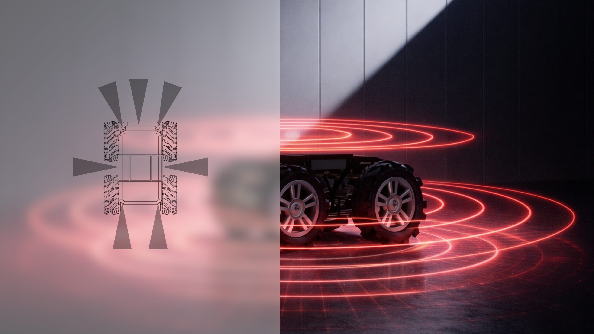
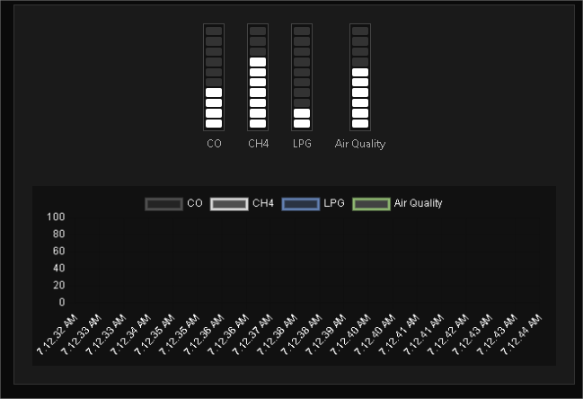
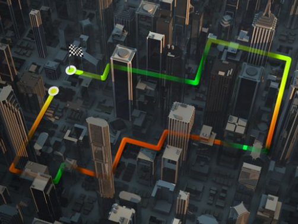

Phase 01
Problem Definition & System Requirements

Phase 02
Mechanical Design & 3D Modeling

Phase 03
Electronics Architecture & PCB Design

Phase 04
Embedded Systems & Autonomous Control

Phase 05
Gas Detection & Calibration

Phase 06
Thermal Imaging & Leak Localization

Phase 07
Navigation, Mapping & GPS Integration

Phase 08
Web Interface & Remote Command System